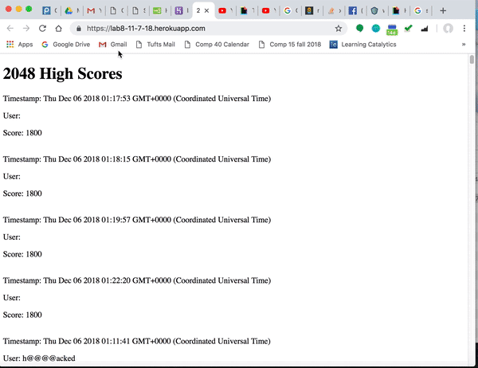
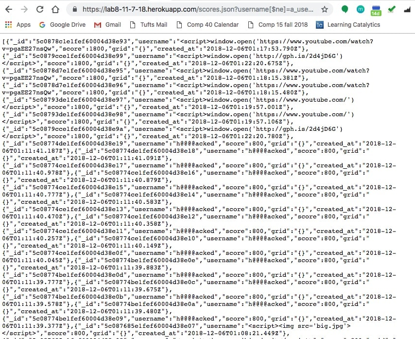

Security Findings
Comp 20 Assignment 4 Hayden Wolff
This is a report to identify security and privacy vulnerabilities in Anna's Comp20 Assignment 3. Several
of these vulnerabilities are in the
OWASP Top 10 (2017). Therefore, they are crucial to fix. The OWASP Top 10 is a document that highlights current dangers in security for web applications.
I first did black box testing by performing attacks without
knowing what Anna's source code was. During this process I used
both curl and bash scripts. I was able to find many vulnerabilities simply with these two tools.
Afterwards, I looked through Anna's source code to find more
vulnerabilities. I used no external tools during this process.
Cross-Site Scripting (XSS)
Cross-Site Scripting, also known as XSS, is in the OWASP top 10
vulnerabilities as number 7. An attacker can inject malicious instructions
often through user input. XSS becomes dangerous when JavaScript is injected
so that the attacker can:
- Access sensitive user information in cookies
- Send the user to another website (often malicious)
- Modify the page (make the user think they're doing one thing when they're
actually doing something else)
- Log keystrokes/other user inputs to record private information (credit
card numbers, passwords, etc).
Mongo Injection
Injection attacks (in this case a Mongo injection) is number 1 in the OWASP top 10. In this kind of attack, "the attacker's goal
is to achieve uintendedbehavior of the database query by altering query parameters."
(Patrick Spiegel, 2016).
Although Mongo is a NoSQL database so it is immune to SQL
injections, it still is vulnerable to injections. Frequently,
NoSQL databases are used to store user data and through
injection attacks an attacker can:
- View sensitive data stored in the database
- Perform arbitrary operations on the database, modifying what is stored
Distributed Denial-of-Service Attack (DDOS)
A DDOS attack disrupts the normal flow of traffic to a server or network by sending a high volume of requests to
then slow it down or crash it. It is often done with a network of many bots (a botnet). When this is done the attacker can:
- Slow or shut down a server so that legitimate requests cannot be done
- Deactivate a service so other break-ins can then
occur
Broken Access Control
Broken Access Control is ranked 5 on the OWASP top 10. Unauthorized API access acts as a gateway for other attacks because
an attacker can act outside of their intended permissions. When this is done the attacker can:
- Elevate their privilege (act like a user
without being logged in, acting as an admin)
- Access/manipulate data that should not be available
- Change the key to a different user to tamper with another
person's account
Issue: XSS
Location Found: index.js in /submit post route.
Severity: High. XSS can very easily compromise
a user's privacy and additionally break an entire website
with doing something as simple as redirecting it (which doesn't
allow a user to access it).
Description: Because the code does not check for special characters
in user input, it is possible to inject scripts. This was the first
vulnerability I checked for. Upon realizing that the website
trusted user input, I used curl to send a username
that wasn't actually a username but rather a script that redirected the page.
Rather than just inserting fields that the user provides in its original form the input
should be cleaned. Below is how fields are inserted (without being checked first).
var toInsert = {
'username': request.body.username,
'score': request.body.score,
'grid': request.body.grid,
'created_at': new Date(),
};
Proof of Vulnerability

Above: Redirects 2048 scores to Giphy
Resolution: Do not trust user input. Validate and clean user input
before inserting it into a database or displaying it on a page. The
following code can be used to strip characters that are often associated with malicious user input. Additionally, limiting the
number of characters in a field can also be a good idea.
var username = request.body.username;
username = username.replace(/[^\w\s]/gi, ''); // remove special chars
var toInsert = {
"username": username,
};
Issue: Mongo Injection
Location Found: index.js in /scores.json get route
Severity: High. Mongo injections can be used to both modify
pre-existing database information or access information that
should be private in the database. This can compromise a client's
privacy and/or modify the client's stored information.
Description: I found this vulnerability through black box testing. I knew that I was able to access the data of specific
database entries by entering a query string, so I figured if I
used a "weird" username and tested for not equal it should dump
the entirety of the Mongo database. It did.
I just had to add this query string to the URL:
https://lab8-11-7-18.herokuapp.com/scores.json?username[$ne]=a_username_no_one_entered
Proof of Vulnerability: Just that single query string dumped
the entire Mongo database into my browser (shown below):

Resolution: Use
mongo-sanitize. "For the passionately lazy, a
standalone module that sanitizes inputs against query selector
injection attacks." It will strip out any keys that start with '$'
and it can be passed to MongoDB.
Issue: DDOS
Location Found: index.js in /submit post route
Severity: High. A DDOS attack can not only restrict access to
a website but often when doing so the service becomes vulnerable
to other attacks.
Description: It was a bit harder to test a DDOS attack, but I looked
through Anna's code and discovered that there were no limitations
on requests coming from a given source (or even a lot coming from distributed services).
I could not fully test a DDOS attack because
I did not want to charge Anna extra money for overflowing her Mongo
database, but I wrote a simple script to use curl to send a bunch of
submit requests to the server. Below is the script
(note that I could have used an infinite loop but again didn't want to charge her money).
#!/bin/bash
for ((i=1; i<=1000; i++))
do
curl --data "username=hacked!&score=6670&grid={}" https://lab8-11-7-18.herokuapp.com/submit
done
echo "done"
Although I could not perform a full DDOS attack, it could be done.
DDOS attacks are what I wrote in this single script but
then performed on a distributed bot net. I am just one person with
a single computer, so this script would not be sufficient to break
the server. However, if there were many computers running this same
script a DDOS attack could be performed. There is nothing that
prevents this in Anna's website.
Proof of Vulnerability:
Timestamp: Thu Dec 06 2018 05:59:48 GMT+0000 (Coordinated Universal Time)
User: hacked!
Score: 6670
Timestamp: Thu Dec 06 2018 05:59:48 GMT+0000 (Coordinated Universal Time)
User: hacked!
Score: 6670
Timestamp: Thu Dec 06 2018 05:59:48 GMT+0000 (Coordinated Universal Time)
User: hacked!
Score: 6670
Timestamp: Thu Dec 06 2018 05:59:48 GMT+0000 (Coordinated Universal Time)
User: hacked!
Score: 6670
Evident that many requests are sent in a very short period of time.
Resolution: Use
express rate limit node package. It limits the same
IP address to only so many requests. For more robust purposes, there are other services such as Cloudfare
that offer protection against DDOS attacks.
Issue: Broken Access Control
Location Found: index.js, line 10.
Severity: Medium. Broken access control allows for cross-origin resource sharing
with no restrictions. This is rated medium in its severity because other protection
measures can be put in place to protect data from being shared. However, it is much safer to just restrict usage from the beginning.
Description: Any other website can access selected resources from this website. This means that
private information that is stored (such as a username, password, etc.) can be
accessed. It would be beneficial to limit cross-origin resource sharing to specific
websites rather than to any potential attacker. It took me a while to realize that
this was a vulnerability and could only determine it by reading the source code. These two standalone lines in Anna's code allow for CORS and don't limit who has access:
var cors = require('cors');
app.use(cors());
Proof of Vulnerability: It is difficult to come up with a hard proof for this. However, examples
can be given. For example, if this application stored something like
the user's email in addition to their username then a different website could
easily access the data if CORS is enabled for any potential attacker. This would
allow an attacker to retrieve a huge number of emails to then spam.
Resolution: Rather than allowing anyone have CORS access pick specific websites that are allowed. The ability to specify for single routes is
here.
In conclusion, a lot of damage can be done without even knowing the source code. Additionally, implementing security fixes is quite easy because there
is so much web development already out there to prevent these kinds of common attacks. Especially when it is viewed as a tradeoff between the danger
of attacks and the extra work for security-- putting in the extra little bit of time for security is most definitely worth it.
https://www.owasp.org/images/7/72/OWASP_Top_10-2017_%28en%29.pdf.pdf
https://excess-xss.com/
https://zanon.io/posts/nosql-injection-in-mongodb
https://www.owasp.org/images/e/ed/GOD16-NOSQL.pdf
https://www.infoq.com/articles/nosql-injections-analysis
https://www.cloudflare.com/learning/ddos/what-is-a-ddos-attack/
https://security.stackexchange.com/questions/42621/does-a-ddos-attack-have-other-purposes-beyond-a-lack-of-availability
https://cwe.mitre.org/data/definitions/798.html
https://www.owasp.org/index.php/Top_10-2017_A5-Broken_Access_Control